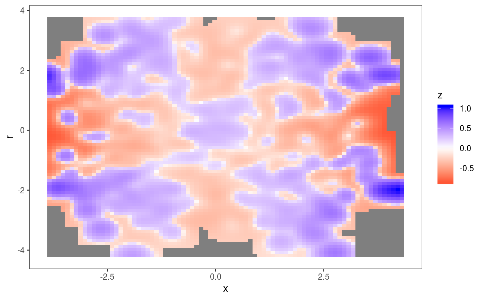
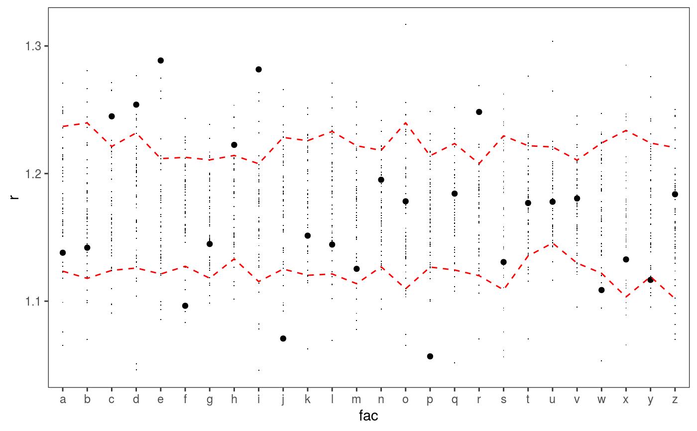
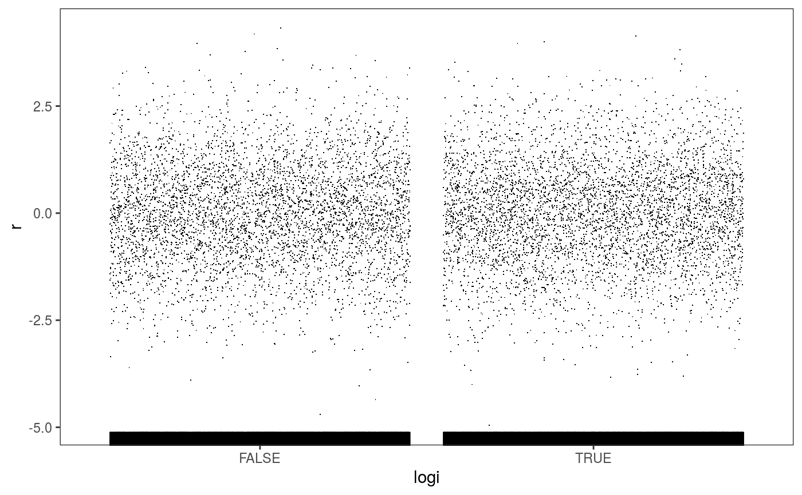
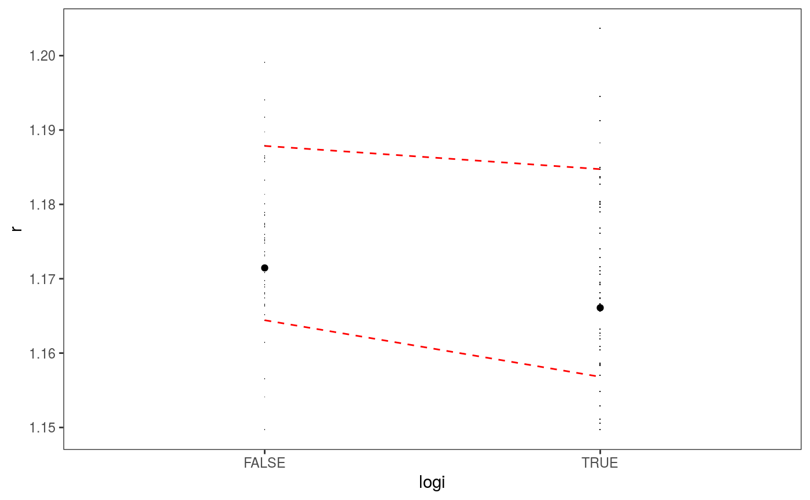

This function extracts the residuals of a fitted GAM model, and orders them according to the value of a single covariate. Then several visual residuals diagnostics can be plotted by adding layers.
check1D( o, x, type = "auto", maxpo = 10000, na.rm = TRUE, trans = NULL, useSim = TRUE )
Arguments
| o | an object of class |
|---|---|
| x | it can be either a) a single character, b) a numeric vector or c) a list of characters.
In case a) it should be the name of one of the variables in the dataframe used to fit |
| type | the type of residuals to be used. See residuals.gamViz.
If |
| maxpo | maximum number of residuals points that will be used by layers such as
|
| na.rm | if |
| trans | function used to transform the observed and simulated residuals or responses. It must take a vector of as input, and must return a vector of the same length. |
| useSim | if |
Value
The function will return an object of class c("plotSmooth", "gg"), unless argument x is a
list. In that case the function will return an object of class c("plotGam", "gg") containing
a checking plot for each variable.
Examples
### Example 1: diagnosing heteroscedasticity library(mgcViz); set.seed(4124) n <- 1e4 x <- rnorm(n); y <- rnorm(n); # Residuals are heteroscedastic w.r.t. x ob <- (x)^2 + (y)^2 + (0.2*abs(x) + 1) * rnorm(n) b <- bam(ob ~ s(x,k=30) + s(y, k=30), discrete = TRUE) b <- getViz(b) # Look at residuals along "x" ck <- check1D(b, "x", type = "tnormal") # Can't see that much ck + l_dens(type = "cond", alpha = 0.8) + l_points() + l_rug(alpha = 0.2)# Compare observed residuals std dev with that of simulated data, # heteroscedasticity is clearly visible b <- getViz(b, nsim = 50) check1D(b, "x") + l_gridCheck1D(gridFun = sd, showReps = TRUE)# This also works with factor or logical data fac <- sample(letters, n, replace = TRUE) logi <- sample(c(TRUE, FALSE), n, replace = TRUE) b <- bam(ob ~ s(x,k=30) + s(y, k=30) + fac + logi, discrete = TRUE) b <- getViz(b, nsim = 50) # Look along "fac" ck <- check1D(b, "fac") ck + l_points() + l_rug()